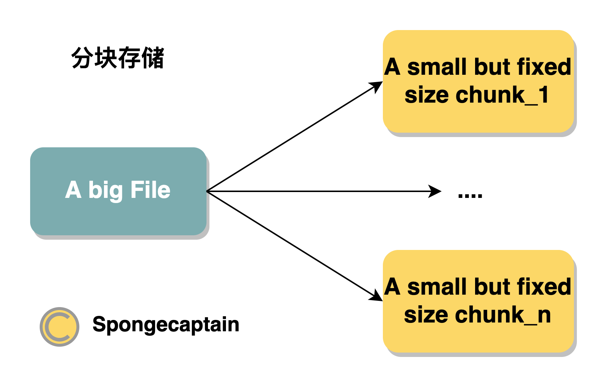
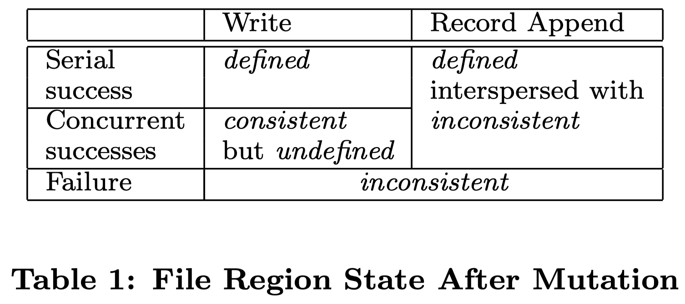
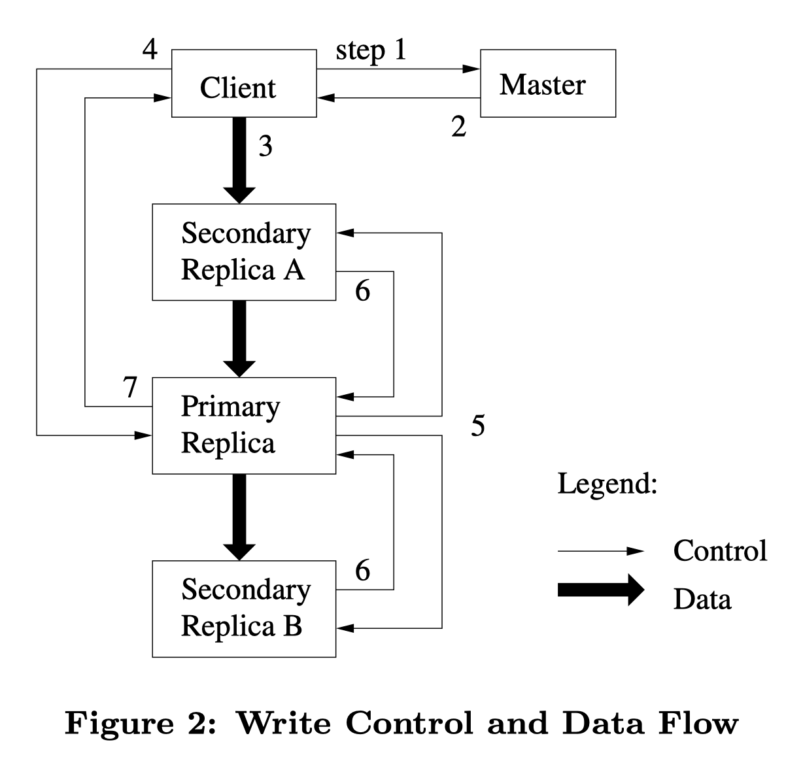
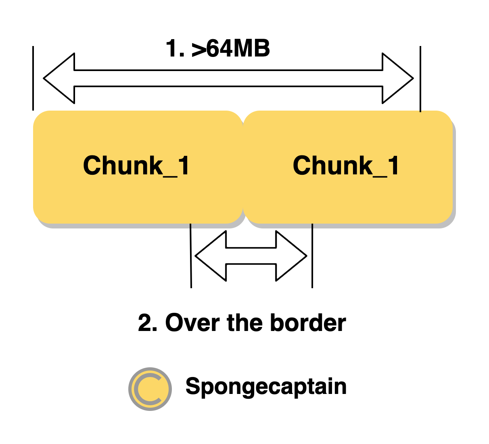
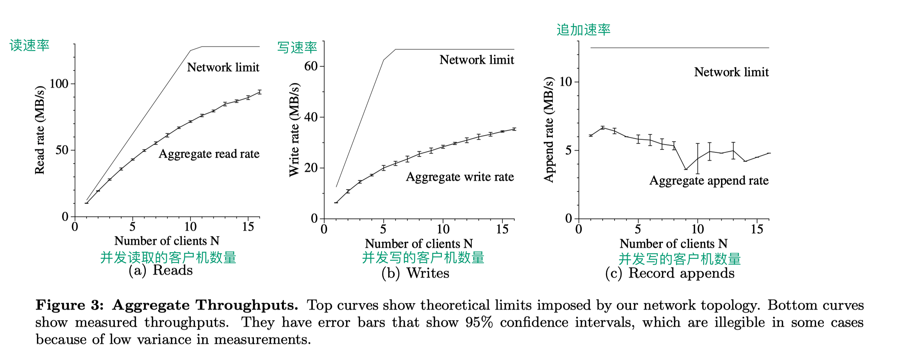
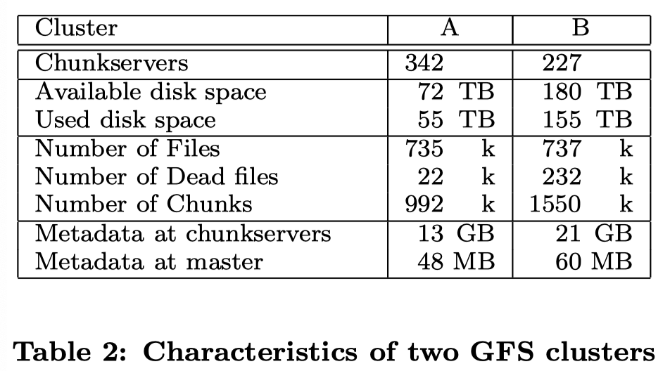
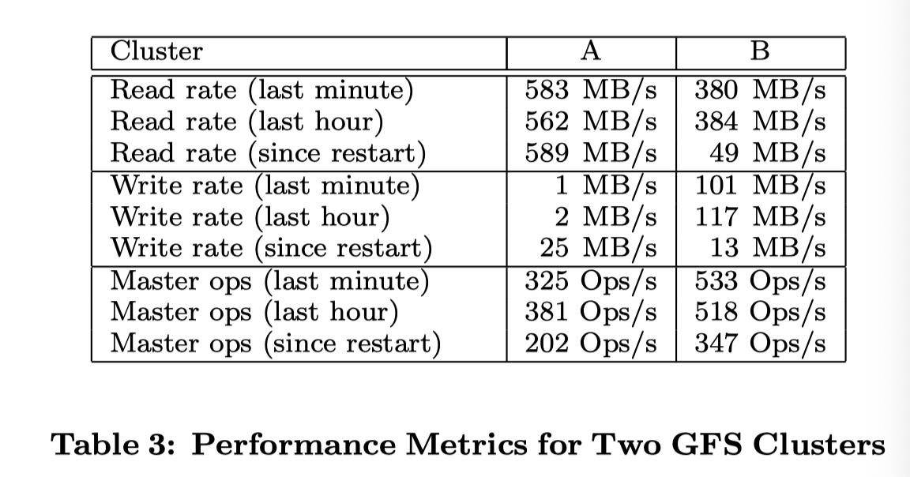
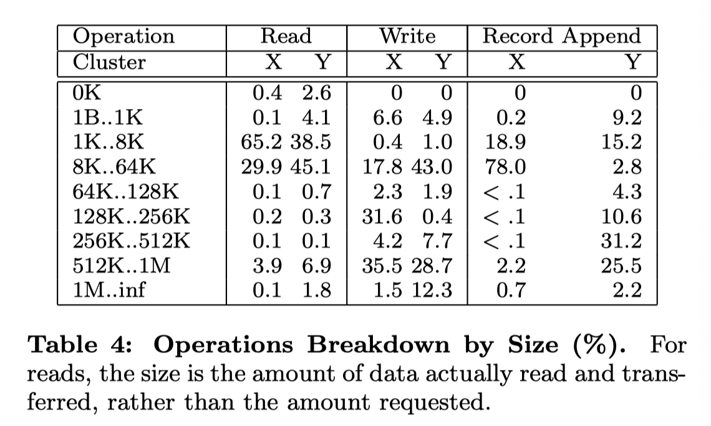
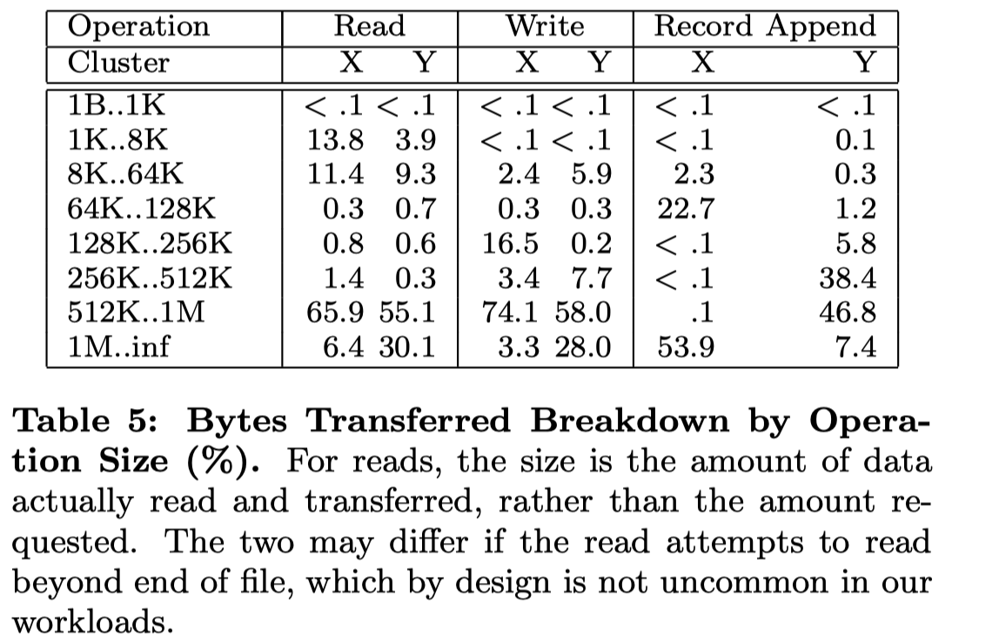
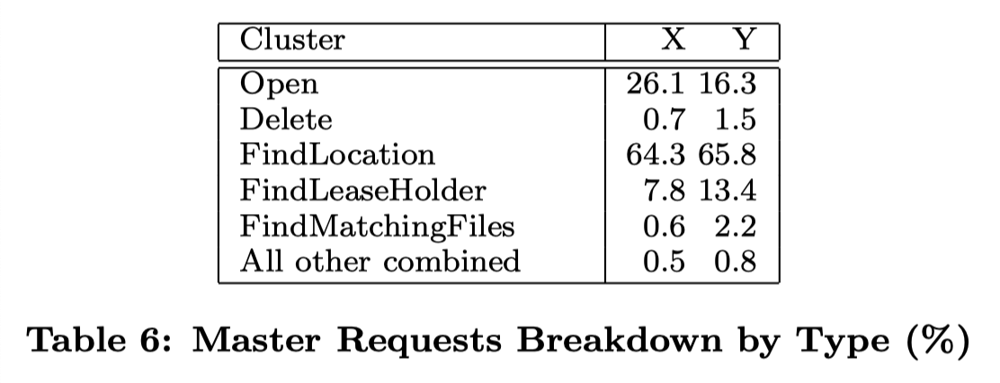

Google File System-GFS 论文阅读
文章目录
1. GFS 是什么？
Google 文件系统（Google File System，缩写为 GFS 或 GoogleFS），一种专有分布式文件系统，由 Google 公司开发，运行于 Linux 平台上。尽管 Google 在 2003 年公布了该系统的一些技术细节，但 Google 并没有将该系统的软件部分作为开源软件发布。正是因为如此，由雅虎牵头根据 Google 三篇论文做出来的 Hadoop 并没有达到 Google 宣称的速度，可见在大数据相关领域，世界上只有 Google 在领跑，其他公司都只是在陪跑。
GFS 的地位相当高，早些年基于 GFS 系统的 MapReduce 以及 BigTable 框架实际上随着时代都逐渐被取代了，并且 MapReduce 以及 BigTable 作为 Google 大数据三驾马车的后两篇论文，也没有 GFS 那样写得详细。
The Google File System 论文在 2003 年发表。
下图是基于 GFS 文件系统发展出来的文件系统分支：

图片引用：https://juicefs.com/blog/cn/posts/distributed-filesystem-comparison/
2. GFS 介绍
2.1 GFS 系统的使用背景
为什么在学习 GFS 之前先介绍背景？
这是因为一个系统通常是针对于某一个具体的应用领域而设计的，和语言一样，一个系统并不能做到样样精通，我们需要理解 trade-off。
在 GFS 论文的引言部分指出分布式存储系统的四个背景：
-
背景 1：分布式组件经常发生错误，应当将此视为常态而不是意外；
组件（也就是分布式系统中的 commodity hardware，可以理解为配置不高的商用主机）发生错误的原因有很多，比如：应用或者操作系统 BUG，人为错误、硬盘、内存、网络甚至是电源故障；
-
背景 2：文件通常是大文件，而不是小文件；
这里的大文件是相对于传统标准而言的，比如 GB 在这属于大文件，KB 级别属于小文件；论文指出，应当操作大文件而不是小文件，即使系统本身支持 billion 级别（十亿个）的 kB 大小的文件的操作，但是这种操作也是不明智的，因为会明显巨大的额外开销。
这是一个非常重要的假设，因为后面会提到 GFS 中直接将 chuksize 设置为 64 MB，因为我们面对的是大文件，因此即使以 64MB 这么大的空间作为存储的管理单元，磁盘空间的浪费也不会很严重。
-
背景 3：大部分文件（主要是指字节数量占比高，而不是操作次数）通过 append（在已有的文件末尾追加）新数据的方式实现修改，而不是直接重写现有数据；
这是基于 Google 对 GFS 的应用场景的判断而做出的背景，因为大部分操作都是 append，因此 GFS 系统优化的中心也放在 record append 操作上。而对于随机写 GFS 仅仅给出一个存在不一致性问题的解决方案。
总之，这种假设下 I/O 操作都是顺序 I/O，效率比随机 I/O 高很多。
-
背景 4：协同设计应用以及文件系统可以提高系统整体灵活性，最终使整个系统收益
2.2 论文的前提与假设
关于 GFS 的主要应用与工作场景，论文规定了一些前提与假设：
-
分布系统的各个组件是廉价的商品主机，而不是专业服务器，因此它们不得不频繁地自我监测、发现故障，并被要求有一定故障容错与自我故障恢复能力；
-
文件数量处于几百万的规模，每一个文件的大小通常为 100 MB 或者更大，GB 也是很常见的数据大小；文件系统虽然支持小文件，但是不会进行特殊的优化（因此直接使用 GFS 应当基于大文件的应用背景）；
-
读工作负载主要由两种读方式构成：大规模的串行读以及小规模的随机读
- 大规模顺序读：顺序（磁盘地址连续地）读取数百及以上个 KB 大小的数据（或者单位改成 MB）；
- 小规模随机读：以任意偏移量读取几个 KB 大小的数据；
小规模随机读会有优化，比如进行排序后的批处理化，以稳定地遍历文件（排序可能是按照索引的指针大小），而不是来回地随机读取。
-
写工作负载主要是大规模的、连续（即串行的）的写操作，这些操作将数据追加到文件末尾。写操作的规模通常和大规模串行读的规模类似；
这要求：文件一旦写好，就几乎不会进行覆写，虽然 GFS 支持在文件的任意位置进行修改，但是并不会进行优化，存在并发安全问题，因此应当尽量避免使用。
-
系统需要支持并发写，即支持数百台机器并发地追加数据到一个文件。操作的原子性和同步开销是主要指标；
-
高持续带宽（High sustained bandwidth）比低延迟更重要；
大多数的应用更子在乎高速率地处理大量数据，但是很少应用对单个读写操作由严格的响应时间要求。参考 StackOverflow 相关问题的回答，我们可以将带宽和延迟用比喻的方式进行比较：带宽和高速公路上的车道数有关，能同时跑多少量车就是带宽，延迟和路况有关，平均车速就是在描述延迟。带宽和延迟反相关。
具体来说，作为一个文件管理系统可能因为涉及异步异地备份而比较耗时，因此延迟比较大。而对于一个游戏服务来说，延迟就不能高。正是因为如此，一个文件服务器的带宽被占用过多时，下载文件的速率就会明显降低。一个游戏为了保障用户体验，在服务器爆满时会采用排队机制，比如 LOL 或者 WOW 服务器在周末时因为在线玩家较多，就会出现登陆排队，另一方面会国内游戏（包括代理）往往会有多个频道或者区的概念，目的都是为了分流。总之目的都是避免服务器因为带宽被占满导致游戏延迟多大，玩家游戏体验过差。
2.3 接口-未完全实现 POSIX
GFS 作为一个分布式文件系统，对外提供了一个传统的单机文件系统接口。但是出于效率和使用性的角度，并没有实现标准的文件系统 POSIX API。
POSIX，Portable Operating System Interface，即可移植操作系统接口，其为 UNIX 系统的一个设计标准，很多类 UNIX 系统也在支持兼容这个标准，如 Linux。Windows 则部分支持此协议。
文件通过目录进行分层管理，通过路径名来定位，支持文件的 create，delete，open，close，read 以及 write 操作。
此外 GFS 还支持如下两个特性：
- Snapshot 快照：快照指的是以低成本方式创建文件和目录树（directory tree）的副本；
- Record Append 记录追加：记录追加指的是 GFS 允许多个客户机并发安全地向同一文件追加数据，同时保证每个客户追加操作的原子性；
这两个特性在下面都会讲到。
3. GFS 系统架构与设计
3.1 GFS 集群的系统架构
一个 GFS cluster（集群）分为两个组件：
- 单个 master 节点；
- 多个 chunkserver 节点；
一个 GFS 集群同时可以被多个 client（客户）节点访问。
一个 GFS 集群的架构可以用下图表示：

可见 GFS 集群是一个典型 Master + Worker 结构。
Master + Worker 结构说的是存在一个 Master 来管理任务、分配任务，而 Worker 是真正干活的节点。在这里干的活自然是数据的存储和读取。
Chunkserver 如果当成 Linux 主机，那么 chunkserver 就是负责存储大文件并与 Client 进行数据传输的组件。不过 Chunkserver 只是一个逻辑上的概念，chunkserver 的本质是 Linux 操作系统上对应的 user-level（用户级别）的服务进程，而我们知道 Linux 操作系统可不止运行运行一个线程。因此，虽然上图将 GFS client 与 GFS chunkserver 分开表示，但是事实上，一个主机同一时刻既可以用作 chunkserver 提供服务，也可以作为 client 向其他 chunkserver 索要数据。
GFS Client 可以认为是依赖于 GFS lib 进行类库函数调用的线程，也是一个逻辑上的概念。
3.2 大文件的分块存储思想
大文件为什么要分块存储？
大文件分块存储和 MySQL 的水平扩展、垂直扩展的理念是一样的，或者说类似于 Redis 的主从节点的设计。不过，如果要讨论最基本的原理，那便是：将串行通为并行。原来一个工人 1 小时能制作 1 个玩具，现在我请十个工人，每个人做玩具的一个组件，最后拼接，现在 1 小时就能够做不止 10 个玩具（福特的流水线）。大文件的读写有着类似的性质，原本一个磁盘转速 5400 rpm，那么读完一个 10 GB 的文件可能需要 200 秒（假设），现在 10 GB 的文件分别在 10 个磁盘上存储，转速不变，那么文件读完仅仅需要 20 秒。这当然是理想情况，但是可以见得大文件分块存储后对系统总的读写速度的提升。这是分布式系统在各个工业领域广泛应用的原因：并行操作。
Chunk Size 是整个分布式文件系统的最重要的参数之一，GFS 以 64 MB 为固定的 Chunk Size 大小，这远远大于典型的单机文件系统 chunk 的大小。例如，对于 64 位的 Linux 操作系统来说，其内存分配单元为 8kB，对于 32 位的 Linux 操作系统来说，内存分配单元为 4 kB。对于 SQL 服务器而言，通常的一次 I/O 磁盘读取则是 8KB（俗称 IO Chunk Size）。虽然它们分别的字节大小语义不同，但是能够看出 GFS 对于字节大小管理的粒度非常大。
分布式系统由于不可避免的故障，因此我们需要使用 replication 机制，每一个 chunk 都存在着若干个副本（它们不一定完全一样 ，因为 GFS 并不是一个强一致性文件管理系统），我们称这些 chunk 的副本为 replica（复数形式为 replicas）。每个 chunk 或者 replica 都作为普通的 Linux 文件存储在 chunkserver 上。
大的 chunk 有如下的优点：
-
首先，它减少了 Client 与 Master 服务器交互的次数，因为对同一块进行多次读写仅仅需要向 Master 服务器发出一次初始请求，就能获取全部的块位置信息。这可以有效地减少 Master 的工作负载；
这是因为 Client 在向 Master 索要 metadata 的部分数据之后，会对这部分数据进行超时的缓存，如果缓存未过期并且还是读写此块 chunk，那么 Client 就不需要向 Master 发出查询 metadata 的请求，直接使用缓存数据即可。
-
其次，减少了 GFS Client 与 GFS chunkserver 进行交互的数据开销，这是因为数据的读取具有连续读取的倾向，即读到 offset 的字节数据后，下一次读取有较大的概率读紧挨着 offset 数据的后续数据，chunk 的大尺寸相当于提供了一层缓存，减少了网络 I/O 的开销；
-
第三，它减少了存储在主服务器上的元数据的大小。这允许我们将元数据保存在内存中。
如果 chunk 大小减小，但是磁盘空间大小不变，那么 chunk 的总个数会在增加，最终导致 metadata 数据量增加，这对 Master 节点的内存会提出更大的要求。关于 Master 节点的 metadata 后续会详细说明。
缺点：小数据量（比如仅仅占据一个 chunk 的文件，文件至少占据一个 chunk）的文件很多时，当很多 GFS Client 同时将 record 存储到该文件时就会造成局部的 hot spots 热点。
事实上，GFS 并没有很好地支持彻底的小文件系统，应用场景还是大文件存储。
论文中关于 GFS 系统集群的框图的重点在于组件之间的相互交互，下图则比较好地体现了 GFS 分布式系统架构的分布式结构以及文件的分块存储特性：

图源：https://en.wikipedia.org/wiki/Google_File_System
从上面图示可以看出，每一个文件都被划分为多个 chunk，这里先单独将文件存储拎出来，并不考虑 replication 机制，那么一个文件是以如下的形式拆分管理的：

注意：这里此文件是一个相当大的文件（GB），如果文件足够小，那么仅仅会对应一个 chunk。
可见，File 分块存储的特点是：
- 每一个 chunk 的大小固定，默认值为 64 MB；
- chunk_1 ~ chnk_n 在逻辑上是连续的，但是在磁盘的存储上并不一定是连续的，它们既可能存在同一个磁盘上的不同地址上，也可能存储在同一主机的不同磁盘上，还有可能存储在不同主机的磁盘上；
- 如果 chunk 涉及 replication，GFS 在默认情况下会为每一个 chunk 多创建 2 个 replicas(这样一来一共有三份数据)，它们大多也是分布在各个磁盘上。
但是文件分块存储也引入了额外的复杂性：原本通过 file name 就能够定位文件，现在文件分为多个 chunk，每一个 chunk 甚至设计 replica，因此需要额外的信息和管理机制来确保文件分块存储的可行性；
GFS 中每一个会 chunk 使用一个不可变的全局唯一（globally unique）64 位 chunk handle identity，这个标识由 Master 节点在 chunk 被创建时进行分配，
3.3 单 Master 节点的设计
GFS Master 节点负责的工作是系统级别的控制，主要有：
- chunk lease manager；
- garbage collection of orphaned chunks；
- chunk migration between chunkservers；
- append record 原子性的确保；
- 对于 metadata 的维护以及为索要 metadata 数据的 GFS 客户端做出正确的响应；
Master 周期性通过 HeartBeat 机制和每一个 chunkserver 进行通信，进行指令的发送以及状态信息的接收。
但是需要注意是，GFS 中 Master 节点基于 Master-Worker 模式设计（有点类似于中间件的名称服务器），并没有把 Master 节点作为代理节点，换句话说，GFS 中 Master 只是个大老板，或者大管家，但是其本身不干活。这意味着 GFS Client 读写操作的数据 I/O 传输直接与 chunkserver 进行。
同时，GFS 实际上仅仅拥有一个 Master 服务器，这极大地简化了设计难度，做出快速的决策。
当然，这样也会引入问题。比如 GFS 的 Master 节点在故障以后，并没有自我恢复功能，虽然后面我们会说到存在 shadow master 节点，但是它们并没有晋升为真正 Master 节点的功能（至少 GFS 论文中没有指出），Master 节点需要人工地进行故障恢复，这会导致小时级别的 GFS 系统不可写（但是 shadow master 节点支持数据读取功能）；
下图是 GFS 论文中使用到的，描述了 GFS 架构（绿色部分是我自己添加的）：

GFS client 文件数据的步骤为：
-
GFS Client 首先对要读取的字节相对偏移量在 chunk size 固定的背景下计算出 chunk index；
Chunk 默认固定大小为 64 MB，而相对**字节（byte）**偏移量的单位字节，因此需要进行转换。
-
给 GFS Master 发送 file name 以及 chunk index，即文件名和 chunk index(索引)；
-
GFS Master 接收到查询请求后，将 filename 以及 chunk index 映射为 chunk handle 以及 chunk locations，并返回给 GFS Client；
-
GFS Client 接收到响应后以 key 为 file name + chunk index，value 为 chunk handle + chunk locations 的键值对形式缓存此次查询信息 ；
-
接着，GFS Client 向其中一个 replicas (最有可能是最近的副本)发送请求，去请求中指定 chunk handle 以及块中的字节范围；
如果你足够细心的话，你会注意到从 GFS Master 返回的是 chunk locations，表示 replicas，即多个 replica 的地址。
注意，如果缓存没有过期，那么 GFS Client 与同一个 replica 对同一 chunk 的读并不需要 clinet-master 进行通信；
同时，客户端通常会对多个 chunk 进行合理的聚合，可以一次向 master 查询多个 chunk + index 的 metadata，以及一次向 chunkserver 读取多个 chunk 的数据；
Master 节点在内存中存储着两个 Table，它们被统称为 metadata，它们存储的内容如下：
- Table 1：
- key：file name
- value：an array of chunk handler (nv)
- Table 2：
- key：chunk handler
- value：
- a list of chunkserver(v)
- chunk version number(nv)
- which chunkserver is primary node(which means others are nomal chunkserver in the list)(v)
- lease expiration time(v)
在 GFS 系统中，每一个 chunk 的唯一识别符是 chunk handler。
另一方面，Lecturer of MIT 6.824, Robert Morris 对 Metadata 的描述和 GFS 论文对于描述略有区别，通过论文的 architecture 便能看到。比如论文上的 Table 存储的是 chunk index，而这里所说的 Table 没有此属性的存储。但是不管怎么样，逻辑是类似的，效率上也没有区别。
Table1 的具体数据结构基于 HashMap 比较好，Table2 的具体实现通过 B+Tree 比较好。因为前者是文件名称作为 key，这是 HashMap 擅长的，查找的效率在 O(1)。而客户端可能一次性涉及读取大字节的数据，因此可能需要一次读取多个 chunk 的数据，涉及多个 chank handler， 这意味着最终要根据范围进行查找，范围查找 HashMap 并不擅长，B+Tree 则更擅长。
GFS 系统中，为了加快响应客户端关于 metadata 数据的请求，因此会将 metadata 存储于内存中，但是因为内存是易失性存储体，因此还需要持久化操作。具体来说：
-
客户端向 Master 节点请求的 metadata 数据直接存储于 Master 的内存中，避免每次请求都需要进行磁盘 I/O；
-
Master 节点使用日志 + checkpoint 的方式来确保数据的持久化；
上面表的介绍中括号中的 nv 含义是 Non-Volatile，也就是非易失性的含义，即要求将数据存储到磁盘上，而 v 的含义便是 Volatile，这些数据不需要持久化，当 Master 节点重启时，通过和每一个 chunkserver 进行通信来初始化不需要持久化的数据。
-
Master 节点内存中的 Table1 与 Table2 中的 nv 数据会定期存储到 Master 的磁盘上（包括 shadow Master 节点）；
为什么有 Table1 与 Table2 的持久化机制了，还需要日志和 checkpoint？
这是因为 Table1 与 Table2 的数据结构无论是 HashMap 还是 B+Tree，如果选择新加入节点后马上进行持久化，那么就会面临随机 I/O 的问题，因为它们本质上都基于节点实现，而节点并不基于连续地址进行存储。出于效率的考虑，这两张表并不会在每一个写操作执行时就执行持久化机制，而是定期执行。不过定期执行就存在因为掉电、故障后数据丢失问题，因此需要引入日志系统。这通常被称为持久化 snapshot of memory。
由于日志仅仅就是追加数据，日志的追加操作属于顺序磁盘 I/O，因此每一条写操作生效前都可以提前把日志记录到磁盘上，再进行真正的写操作，因此数据总是能够安全地确保持久化。主机重启时重新执行一遍日志即可。
日志系统非常冗长，如果每次启动 Master 节点时都执行全部的日志记录一次，那么效率就会很低。另一方面，GFS 本身就必然会持久化 Table1、Table2，我们应当利用这个特点。checkpoint 就是来解决这个问题的。每次持久化 Table1、Table2 成功后，都会在日志系统上打上一个 checkpoint，用于说明下一次启动 master 之后可以先读取持久化了的 Table1、Table2 磁盘数据，然后从日志系统的 checkpoint 向后执行。这样一来 Master 启动时的效率就不会很低了，因为并不会将日志从头到尾执行一遍，而仅仅是 checkpoint 到尾执行一遍。另一面，checkpoint 也赋予了日志系统删除陈旧的日志的能力，用来节约磁盘空间（checkpoint 前的字节数据理论上都可以删除）。
3.4 Metadata-元数据
Master 存储三类最重要的 metadata 数据：File 和 chunk 的 namespace(命名空间)、file 到 chunk 的映射 Map、每一个 chunk replica 的存储位置。所有元数据都保存在主服务器的内存中。前两种类型(名称空间和文件到块的映射)数据同时也会通过 logging metuations 存储到主机本地磁盘上、复制到远程机器上来持久化。使用日志允许我们简单、可靠地更新 Master 的状态，并且不会在主崩溃时出现不一致的风险。另一方面，Master 并不会持久化 chunk replica 的位置信息。其通过启动时以及 chunkserver 加入集群时发起 chunkserver 的每个 chunk 数据块位置的询问。
内存内的数据结构
元数据保存在 Master 的内存中使得 Master 要对元数据做出变更变得极为容易；同时，这也使得 Master 能够更加高效地周期扫描集群的元数据，这期扫描主要用户实现垃圾收集、出现 chunkserver 时重新创建其一个副本以及 chunkserver 之间的负载平衡。
唯一的不足在于这使得整个集群所能拥有的 Chunk 数量受限于 Master 的内存大小，不过这是一个小问题，因为对于一个 64MB 大小的 Chunk，Master 只需要维持不到 64 字节的元数据（虽然前者数据存储在磁盘上，后者数据存储在内存中）。
如果需要支持更大的文件系统，通过给 Master 节点内存扩容代价是不大的，但是这个不大的代价可以带来在内存中存储元数据所获得的简单性、可靠性、性能和灵活性。
Chunk Locations
Master 服务器不持久化 chunkservers 拥有哪个 chunk 副本的持久记录，而是通过询问实现：
- Master 在启动时通过轮询获取每一个 chunkserver 上所有 chunk replica 的初始值；
- Master 在启动后通过心跳机制来检测每一个 chunkserver 上所有 chunk replica 的变化，以保证其拥有最新的数据。
为什么要这样做？
-
持久化意义不大，轮询足够简单的同时还能保证 master 节点和 chunkserver 在 chunk 位置信息上保持同步。
chunkserver 的信息变动在拥有数百台服务器的集群上是很常见的，因为有新加入 chunkserver，也有离开的 chunkserver，还包括重启、运行崩溃的 chunkserver；
-
chunkserver 对它自己的磁盘上有什么块或没有什么块有最终决定权。试图在 Master 服务器上维护这个信息的一致视图是没有意义的，因为 chunkserver 上的错误可能会导致块自动消失(例如，磁盘可能坏了并被禁用)，或者运维为 chunkserver 重命名。
Operation Log
Operation Log 包含关键 metadata 数据更改的历史记录。它是 GFS 系统的核心。它不仅是元数据的唯一持久记录，而且还充当定义并发操作顺序的逻辑时间线。文件和块，以及它们的版本，都是唯一的，永远由它们创建的逻辑时间来标识。
由于 Operation Log 日志非常重要，所以我们必须可靠地存储它，并且在元数据的更改被持久化之前，不能使更改对客户端可见。否则，即使块本身存活下来，我们也会丢失整个文件系统或最近的客户端操作。因此，我们将它复制到多个远程机器上，只有在本地和远程将相应的日志记录刷新到磁盘之后才响应客户机操作。在刷新之前，Master 批处理多个日志记录，从而减少刷新和复制对总体系统吞吐量的影响。
Master 通过重播操作日志恢复其文件系统状态。为了最小化启动时间，我们必须保持日志较小。每当日志增长超过一定的大小时，Master 检查其状态，以便通过从本地磁盘加载最新的 checkpoint 并在此之后仅重放有限数量的日志记录来恢复。checkpoint 是一种紧凑的类似 b 树的形式，可以直接映射到内存中并用于名称空间查找，而无需进行额外的解析。这进一步加快了恢复并提高了可用性。
Master 恢复仅仅需要最新的完整检查点和后续日志文件。旧的检查点和日志文件可以自由删除，但通常还是会保留了一些近期的日志，以防止意外。
3.5 Consistency Model-一致性模型
GFS 有一个宽松的一致性模型，它可以很好地支持高度分布式的应用程序，但是实现起来仍然相对简单和高效。我们现在讨论 GFS 的保证以及它们对应用程序的意义。我们还强调了 GFS 如何维持这些担保，但将细节留给了文件的其他部分。
Guarantees by GFS
- 文件名 namespace 命名空间的变化（比如，文件的创建）全权由 Master 节点在内存中进行管理，这个过程通过 namespace lock 确保操作的原子性以及并发正确性，Mater 节点的 operation log 定义了这些操作在系统中的全局顺序；
在数据修改后，文件区域的状态取决于很多个条件，比如修改类型、修改的成功与否、是否存在并发修改，下表总结了文件区域的状态（来自于论文）：

这张表从下到上对并发修改的要求逐渐增高，Failure 表示并发修改失败，Concurrent success 表示并发修改成功，Serial success 则表示串行修改成功，串行要求最高，但是其如同单线程写一样不存在任何并发问题。
为了看懂上表，首先我们应当理解 GFS 系统中对 file region 状态的概念定义：
-
consistent：所有 GFS Client 将总是看到完全相同的数据，无论 GFS Client 最终是从哪一个 GFS chunkserver replica 上进行数据读取；
-
defined：当一个文件数据修改之后如果 file region 还是保持 consistent 状态，并且所有 client 能够看到全部修改（且已经写入 chunkserver）的内容；
这种说法相当于并发正确地写入成功，并且我们可以看到 defined 的要求高于 consistent，因为后者是前者的基础；
-
consistent but undefined：从定义上来看，就是所有 client 能够看到相同的数据，但是并不能及时反映并发修改中的任意修改；
这通常指写冲突发生了，GFS 并不保证多个客户端的并发覆写请求的最终执行顺序，这种顺序是 undefined，这是因为不能确定真正的执行次序而不确定。但是最终所有客户端查询时能读到相同的结果。
-
inconsistent：因为处于 inconsistent 状态，因此一定也处于 undefined 状态，造成此状态的操作也被认为是 failed 的。不同的 Client 在能读到的数据不一致，同一个 Client 在不同的时刻读取的文件数据也不一致。
其次，表格将数据的修改分为两种情况：
-
Write：修改 File 中的原有数据，具体来说就是在指定文件的偏移地址下写入数据（这就是覆写操作）；
GFS 没有为这类覆写操作提供完好的一致性保证：如果多个的 Client 并发地写入同一块文件区域，操作完成后这块区域的数据可能由各次写入的数据碎片所组成，此时的状态最好也就是 consistant but undefined 状态。
-
Record Append：即在原有 File 末尾 Append(追加)数据，这种操作被 GFS 系统确保为原子操作，这是 GFS 系统最重要的优化之一。GFS 中的 append 操作并不简单地在原文件的末尾对应的 offset 处开始写入数据（这是通常意义下的 append 操作），而是通过选择一个 offset，这一点在下面会详细说到。最后该被选择的 offset 会返回给 Client，代表此次 record 的起始数据偏移量。由于 GFS 对于 Record Append 采用的是 at least once 的消息通信模型，在绝对确保此次写操作成功的情况下，可能造成在重复写数据。
在一系列成功的修改操作以后，被修改的文件区域的状态是 defined 并包含最后一次修改的写内容。GFS 通过以下两种方式实现这一目标：
-
在所有写操作相关的 replicas 上以同一顺序采用给 chunk 进行修改；
-
使用 chunk version numbers（也就是版本号）去检测 replicas 上的数据是否已经 stale（过时），这种情况可能是由于 chunkserver 出现暂时的宕机(down)；
注意，一旦一个 replicas 被判定为过时，那么 GFS 就不会基于此 replicas 进行任何修改操作，客户机再向 Master 节点请求元数据时，也会自动滤除过时的 replicas。并且 Master 通常会及时地对过时的 replicas 进行 garbage collected（垃圾回收）。
出现的相关问题：
- 缓存未过期时 replica 出现过时的问题：因为在客户机存在缓存 cache 的缘故，在缓存被刷新之前，客户机还是有机会从 stale replica 上读取文件数据。这个时间穿窗口取决于缓存的超时时间设置以及下一次打开同一文件的限制。另一方面，GFS 中的大多数文件都是 append-only，因此 stale replica 上的读仅仅是返回一个 premature end of chunk，也就是说仅仅没有包含最新的追加内容的 chunk，而不是被覆写了的数据（因为无法覆写），这样造成的影响也不会很大。
- 组件故障问题：Master 节点进行通过与所有 chunkserver 进行 regular handshake（定期握手）来检测出现故障的 chunkserver，通过 checksumming（校验和）来检测数据是否损坏。一旦出现问题，GFS 会尽快地从有效的 replicas 上进行数据恢复，除非在 Master 节点检测到故障之前，存储相同内容的 3 块 replica 都出现故障时才会导致不可逆的数据丢失。不过即使是这样，GFS 系统也不会不可用，而是会及实地给客户端回应数据出错的响应，而不是返回出错的数据。
Implications for Applications 也就是对使用 GFS 的应用的要求
使用 GFS 的应用可以使用一些简单的技术来达到 GFS 系统所支持的宽松一致性协议，比如：
- 尽量选择 append 追加，而不是 overwrite 覆写，这是因为 GFS 仅仅保证 append 操作的一致性，但是覆写操作没有一致性保证；
- 写入数据时使用额外的校验信息，比如校验和（或者其他 hash 技术）；
- 可以选择加入额外的唯一标识符来去除因为 write at least once 而造成的重复数据（直白一点就是客户端在读取数据时如果发现唯一标识符已经读过了，那么就舍弃这部分数据）；
3. 系统内部的交互
GFS 系统设计的一大理念就是尽量减少 Master 节点在所有操作中的参与，目的是减少 Master 节点在运算、内存、带宽压力。
3.1 Leases and Mutation Order-租赁和修改顺序
正如上面所说，修改操作包括追加和覆写，这两种写操作都会最终作用于所有的 replica（通常意义上说就是一个写指令对应于 3 个 chunk+replica 的 I/O 写）。对于 chunk 的写操作涉及两种修改：
- 在相关 chunkserver 上进行 I/O 写操作；
- 在 Master 节点上修改 metadata；
Leaese 的含义是租赁，其用于 Master 确保多个节点之间在写操作顺序上的一致性，具体操作是这样的：
- Master 节点将一个 chunk lease 发给写操作设计 chunk 的三个 chunkserver 中的任意一个节点，此节点被称为 primary 节点，而其他两个节点被称为 secondaries(从属节点)。Master 在此消息中还会告知被选中的 primary 节点来自客户端的多个写操作请求；
- chunkserver 收到 lease 以及写操作请求后，其才认为自己有权限进行如下操作：决定多个写操作的执行顺序，此顺序被称为 serial order（串行执行顺序）。
- 当 primary 决定好顺序后，会将带有执行顺序的 lease 返回给 master 节点，master 节点随后会负责将顺序分发给其他两个 replica。其他两个 replicas 并没有选择权，只能按照 primary 决定的顺序进行执行。
这种 Lease 机制减少了 Master 的管理开销，同时也确保了线程安全性，因为执行顺序不再由 Master 去决定，而是由拥有具体 lease 租赁的 chunkserver 节点决定。租赁的默认占用超时时间为 60s，但是如果 Master 又接收到对同一个 chunk 的写操作，那么可以延长当前 primary 节点的剩余租赁时间。
在图 2 中，上述租赁的过程依次使用各个编号来表示。

这里的模型是一个写操作涉及三个 Replica 节点。注意 5、6 操作都有两个，分别为镜像操作。
-
Step1：客户端向 Master 节点查询哪一个 Chunk Server 持有要进行写操作的 Chunk 的 Lease；
-
Step2：Master 节点回应 primary 节点的标识符（包括地址）以及其他 replicas 节点的地址。客户端接收后将此回应进行缓存，其会在 primary 节点不可达或者其不再持有 lease 时再次向 Master 查询；
-
Step3：客户端向所有的 replicas 都推送数据，注意此时客户端可以依靠任意顺序进行推送数据，并没有要求此时必须先给 primary 推送数据。所有的 chunkserver(replicas) 都会将推送来的数据存放在内置的 LRU buffer cacahe，缓存中的数据直到被使用或者超时才会被释放。
LRU 是 Least Recently Used 的缩写，即缓存文件置换机制的一种，其优先将最近使用频率最少的缓存删除。
这里数据流操作本身不涉及 Master 节点，也达到了给 Master 节点减压的目的。
-
Step4：只要 replicas 回复已经接收到了所有数据，那么 Client 就会发送一个 write 指令给 primary 节点，primary 节点为多个写操作计划执行的序号（写操作可能来自于多个 Client），然后将此顺序应用于其本地 I/O 写操作。
-
Step5：primary 节点将写操作请求转发给其他两个 replica，它们都将按照 primary 的顺序执行本地的 I/O 写操作；
-
Step6：secondaries 从节点返回写成功的响应给 primary 节点；
-
Step7：Primary 响应客户端，并返回该过程中发生的错误。注意，这里的错误不仅仅是 Primary 节点的写操作错误，还包括其他两个 replica 节点的写操作错误。如果 primary 自身发生错误，其就不会向其他两个 replica 节点进行转发。另一方面，如果 Client 收到写失败响应，那么其会重新进行写操作尝试，即重新开始 3-7 步。
注意事项：论文中也指出，上述步骤关于 ‘‘从 Client 写相同数据写三次”（分别向不同的 replica）是不符合实际的，这样说只是为了方便画图。实际上数据流是基于一个管道模型进行传输，下一节会讲述此管道传输机制。
3.2 Data Flow-数据流
Data Flow 传输模型的两个关键字：linearly(线型)、pipeline (管道)。
关于数据流，GFS 的目标是将数据流和控制流进行解耦，解耦的方式就是以线型的方式进行传输数据。具体来说就是 Client 负责给 primary 传输写入的数据，而 primary 负责给下一个 replica 传输数据，而下一个 replica 又负责给下下一个 replica 传输数据。这种方式能充分利用每台机器的网络带宽，避免网络瓶颈和高延迟链接，并最小化通过所有数据的延迟。
具体来说，避免 network bottlenecks 与 high-latency links 的线型链路采用了如下做法：每一个节点都会将数据转发给最近且还没有收到数据的节点，节点通过 IP 地址来估算两个节点之间的链路距离。
Data Flow 为了最小化延迟，还采用管道传输模型管道传输模型可以用生活中自来水管道来解释，水经过一个节点之后就会去下一个节点，在计算机中水就是字节。当一个 chunkserver 接收到一些数据后（不是一个字节就会触发，而是要有一定阈值）就会立即转发给下一个节点，而不是等到此次写操作的所有数据接收完毕，才开始向下一个节点转发。值得一提的是，GFS 系统使用的是全双工网络，即发送数据时不会降低数据接收速率。
3.3 Atomic Record Appends - 原子的记录追加
GFS 提供了原子的 Record Append（文件追加）操作。 在传统的写操纵中，客户端需要指定写入数据的地址偏移量，但是对同一地址的并发写操作并不能保证是序列化发生的，因此某一个文件区域可能包含来自多个客户端写操作的碎片。但是在 GFS 中的 Record Append 中，客户端仅仅负责指定要写的数据，GFS 以 at least once 的原子操作进行写，写操作的相关数据一定是作为连续的字节序列存放在 GFS 存放在 GFS 选择的偏移量处。
如果设计多个 record append 操作，那么就和 3.1 小节所说的，利用 lease 来实现并发安全性。
具体来说：record append 是指向已经存储的文件的末尾追加数据，因此客户端并不需要像读操作那样提供一个数据范围，因为 record append 操作总是在文件末尾追加数据，这个地址偏移量应当交给 chunksever 来确定。
GFS record append 操作的内部执行逻辑如下：
- Client 确定 file name 以及要写入的 byte data（形式上可以选择一个 buffer 来存储要写入的字节数据）；
- Client 向 Master 发出期望进行 record 操作的请求，并附带上 file name，但是不用携带字节数据；
- Master 接收到请求之后得知是一个 append record 请求，并且得到 file name。Master 节点通过其内存中的 metadata 得到当前 file 分块存储的最后一个 chunk 的 chunk handle 以及 chunk 所在的所有 chunkserver；
- Master 之后将这些信息转发给 Client；
- …下面的操作就类似于 3.1 小节中的过程。
注意事项，Record append 操作还涉及 primary 的选择步骤：
-
Master 节点在接受到修改请求时，会找此 file 文件最后一个 chunk 的 up-to-date 版本（最新版本），最新版本号应当等于 Master 节点的版本号；
什么叫最新版本。chunk 使用一个 chunk version 进行版本管理（分布式环境下普遍使用版本号进行管理，比如 Lamport 逻辑时钟）。一个修改涉及 3 个 chunk 的修改，如果某一个 chunk 因为网络原因没能够修改成功，那么其 chunk version 就会落后于其他两个 chunk，此 chunk 会被认为是过时的。
-
Master 在选择好 primary 节点后递增当前 chunk 的 chunk version，并通过 Master 的持久化机制持久化；
-
通过 Primary 与其他 chunkserver，发送修改此 chunk 的版本号的通知，而节点接收到次通知后会修改版本号，然后持久化；
-
Primary 然后开始选择 file 最后一个文件的 chunk 的末尾 offset 开始写入数据，写入后将此消息转发给其他 chunkserver，它们也对相同的 chunk 在 offset 处写入数据；
这里有几个注意要点：
1.如果向 file 追加的数据超过了 chunk 剩余容量怎么办？
- 首先，这是一个经常发生的问题，因为 record append 操作实际上能一次添加的数据大小是被限制的，大小为 chunksize（64 MB）的 1/4，因此在大多数常见下，向 chunk append 数据并不会超出 64 MB 大小的限制；
- 其次，如果真的发生了这个问题，那么 Primary 节点还是会向该 chunk append 数据，直到达到 64MB 大小上限，然后通知其他两个 replicas 执行相同的操作。最后响应客户端，告知客户端创建新 chunk 再继续填充，因为数据实际上没有完全消耗掉；
2.注意：Record Append 作为 GFS 中写操作的一种类型，自然准许遵循 3.1 小节中的数据流机制；
3.At least once 机制引发的问题
GFS 论文没有指出当 chunk 上进行 record append 失败后客户端应当立即重试，我们的假设也基于此。
在默认配置下，我们并发地进行 record append 操作，依次写入 A、B、C 数据块，如下图所示：

这里我们发现 primary 与 secondary_1 的 chunk 的数据是一致的，但是都出现了额外的一次 B 数据块的写入。secondary_2 的数据块和前面两个都不同，主要问题是由于在第一次写入 B secondary_2 因为网络问题没能写入数据块 B。
- 三个 chunk 中的任何一个上的 record append 若执行失败，primary 会负责告知客户端数据块写入错误。这里就是告知客户端数据块 B 写入错误；
- 但是 Primary 在告知客户端之前已经成功地将 A、B、C 顺序写入了（secondary_1 因为正确按照 Primary 的顺序执行因此其 chunk 和 primary 保持一致）；
- 客户端可以选择再次发起数据块 B 的重写请求，但是这个操作并不是及时的，因为 A、B、C 已经写入。因此最后我们能看到，数据块 B 实际上处于整个 chunk 的文件末尾；
最后 3 个 chunk 的 chunk version 实际上是一样的，因此 Master 以及 chunkserver 并不能辨别出哪一个 chunk 存在数据问题。如果在如上操作后客户端发起此 chunk 的请求，那么客户端最终取决于在哪一个 chunkserver 读取 chunk 数据 。如果不采取其他措施的话就会另客户端感到不解，因为上述三个 chunk 的数据都不是我们起初想要的 ABC 顺序。
因此客户端在读取 chunk 数据时就应当考虑到存在这个问题，主动通过其他机制来避免（比如为每一次的 append 操作的数据也使用上 metadata，比如字长信息的描述）。客户端在读取此 chunk 时，可以通过校验和避免得到失败写入的数据，通过唯一标识符避免读到重复数据。
3.4 Read 读操作
-
Client —> Master 请求：file name + range(或者说是 offset，总之是客户端打算读取的字节范围)；
-
Master —-> Client 响应：chunk handle + a list of server
这一步 Client 在本地存在缓存，它在缓存失效之前读取同一个 chunk 的数据并不需要向 Master 重新发出索要对应 metadata 数据的请求，而是直接使用缓存，即直接向 chunkserver 进行交互数据；
-
client 在 a list of server 中跳出一个 chunkserver，GFS 论文指出，通过 chunkserver 的 IP 地址，能够 guess 出距离当前 client 最近的 chunksver，然后 Client 会优先向最近的 chunkserver 请求数据读取；
-
chunkserver 收到数据读取请求后，根据 clinet 发来的 chunk hanle 进行磁盘 I/O 最终返回数据给 client；
上述所说的是一个最简单的情况，但是存在更复杂的情况，比如：
- 客户端索要的数据大于固定大小 chunk 的最大数据量：64 MB；
- 客户端索要的数据虽然在 64 MB 以内，但是其字节范围恰好跨越着两个 chunk 之间的边界；
上述两种复杂情况如下图所示：

复杂情况下客户端是如何进行数据请求的呢？
事实上，客户端依赖于 GFS lib 进行数据读取（包括写操作，但是这里的重点是读操作），因此对客户端而言，其甚至不知道 File 底层被 chunk 存储。对于第一种情况，在逻辑上可以认为 GFS lib 底层会向 Master 节点索要两次 chunk 的 metadata 数据（实际上仅仅需要查询一次），然后 GFS lib 底层又会分别与两个 chunkserver 进行数据传输。对于第二种情况，GFS lib 在发送请求时并不会知道此次读取涉及两个 chunk 的数据读取，但是其会接收到来自 Master 两个 chunk 的 metadata，接着也会分别和与两个 chunkserver 进行数据传输。
可见，即使是在稍微复杂一点的情况下，GFS 的处理逻辑还是相当简单的。
3.5 Snapshot-快照
这里的 Sanpshot 和 Master 节点的持久化，即对内存 memory 的 snaptshot 有所不同。
Snapshot(快照)操作的含义就是为文件创建一个副本或者直接为一个目录树创建副本（有多个文件），在 GFS 中以非常快速的方式进行，并且尽量会减少对于正在进行的写操作的影响。
GFS 使用 standard copy-on-write 技术来实现快照，其实现方式是：
- 当一个 Master 节点接收到一个 snapshot 请求，它首先会 revoke（撤销） 对拷贝涉及的 chunk 对应的 lease（租赁），这用于确保后续写操作必须经过 Master 的重新进行交互，进行查找当前租赁的实际持有者，以便于 Master 有机会先创建 chunk 的副本。
- 当 lease 撤回或者过期后，Master 首先会将操作日志记录到磁盘，然后通过复制源文件以及目录树的 metadata 来将日志记录应用到内存中的状态。
- 当有关客户端请求 Master 对这些 chunk 进行写操作时，Master 通过这些 chunk 上的引用计数大于 1，于是 Master 就会为这些 chunk 创建相关的 handler，然后通知拥有这些 chunk 的 chunkserver 创建数据相同的 chunk（这种方式不再 Master 上进行复制，目的是节约 Master 带宽与内存）。
- 最后客户端新的写请求将直接作用于这些新创建的 chunk 上，同时也会被颁发新的 lease；
4. MASTER OPERATION-主节点操作
Master 节点负责的工作有：
- 所有 namespace 的管理工作；
- 管理整个系统中的所有 chunk replicas：
- 做出将 chunk 实际存储在哪里的决定；
- 创建新的 chunk 和 replica；
- 协调系统的各种操作（比如读、写、快照等），用于保证 chunk 正确且有效地进行备份；
- 管理 chunkserver 之间的负载均衡；
- 回收没有被收用的存储空间；
下面具体展开上述主题。
4.1 namespcace management and locking-命名空间管理和锁机制
Master 节点有很多操作都需要执行很长时间，比如：snapshot 操作必须向 chunkserver 撤回 snapshot 涉及的所有 chunk 的 lease。我们并不希望这些耗时的操作会影响 Master 节点的其他操作。出于这个目的，我们给 namespace 上锁来实现可以同时进行多个操作以及确保操作的正确串行执行顺序。
不同于其他传统的文件系统，GFS 并没有为每一个目录创建一个用于记录当前目录拥有哪些文件的数据结构，也不支持文件和目录的别名。GFS 逻辑上将其 namesapace 当做一个查询表，用于将 full pathname（要么是一个 absolute file name，要么是一个 absolute directory name） 映射为 metadata。如果使用 prefix compression（前缀压缩），那么这个表可以在内存中被高效地表示。在 namespace 树中的每一个节点对应一个 full pathname，都拥有一个与之相关联的 read-write lock(读写锁)。
Master 节点的每一个操作都必须先获得一系列锁才能够真正地运行，下面是具体的一个案例：
这里涉及一个锁粒度的问题，如果要修改一个 full pathname 表示的目录/文件，我们是给它的上级目录全部上锁吗？上哪一种锁，读锁还是写锁？
比如我们要同时写两个目录 /home/user/foo 与 ``/home/user/bar`，此时的锁占用情况如下图所示：
我们不能说
user/被使用 read lock 占用了，因为我们的目录或者文件总是以 full name 的形式来表示的，换句话说，其只能被写为从根目录出发的/home/user目录。
关于写操作涉及的文件/目录的锁获取结构有如下的规律：
- 最底层的文件/目录一定是获得写锁，因此 Master 其他操作不能同时修改同一的底层文件/目录，因为写锁是排它锁；
- 除了最底层的文件/目录，其他所有父目录、祖父目录仅仅需要获得读锁，读锁是一种共享锁。因此 Master 其他操作并不能修改父目录，比如将
/home/user改为/home/usr是会被阻塞的，因为父目录已经加上了读锁，写锁的获得是非法的。另一方面，对于底层目录/文件的同级目录还是可以进行写操作，因为即使它们的父目录相同，但是父目录仅仅是获得读锁。而底层目录的 full Name 又不相同，因此获取不同的写锁，因此不会冲突。
可见 Master 操作将锁分为读写锁，而且对当前路径和父目录进行不同的锁划分。正因为这种细粒度划分的锁机制，即便当前目录的写锁被占用了，那么当前目录的父目录还是可以创建文件的，因为父目录还是被写锁占据着（创建父目录下的文件，仅仅需要获得父目录的读锁）。这是 GFS 系统和其他操作系统在锁粒度控制上的很大的不同，GFS 运行在同一目录下并发的创建不同的文件/目录。但是其和其他锁机制类似的一点是：不允许同一时刻还修改父目录的名称。
这种支持同级目录并发修改的锁机制效率高且并发安全性，父目录使用读锁就能够实现目录名不会同时被删除、修改、快照。
4.2 Replica Placement - 确定 Replica 的存放位置
GFS 系统是一个分布式系统，一个 GFS 集群通常会有成百上千个 chunkserver，它们分布在很多 machine rack（机架上）。每一个 chunkserver 同一可以被成百上千个其他位于同一（或不同）的机架上的 chunkserver 访问。在两个不同机架上进行通信的 chunkserver 需要通过交换机。此外，机架的输入输出带宽可能小于机架内所有 chunkserver 的总带宽。这些多级分布对数据的可伸缩性、可靠性和可用性提出了挑战。
chunk replica placement policy 有两个目的：
- 最大化数据 reliability（可靠性）和 availability（可用性）；
- 最大化 network bandwidth utilization（网络带宽利用率）；
为了达到上述目的，在 chunkserver 和 chunkserver 之间传播 replicas 是不够的，这仅仅能够在机器或磁盘故障时保障可靠性和可用性，且会给单个 rack 机架带来带宽使用上的压力，因为读取数据时，无论客户端最终选择哪一个 replicas，最终都是消耗着同一个 replicas 的带宽。我们还需要在不同的 racks(机架) 上传输 chunk replicas，这能够在一整个机架故障时都能够确保可靠性和可用性。另一方面，由于 chunk replicas 分布存储在不同机架上的 chunkserver 上，因此降低了每一个 rack 提供 replicas 读写时的带宽压力，因为相同于多个机架平均了带宽压力。
4.3 Creation, Re-replication, Rebalancing-创建 重放置 均衡再建
chunk replicas 出于三个原因被创建：
- chunk reation；
- Re-replication；
- reblancing；
当 Master 节点创建了一个 chunk，它负责确定将这个 initially empty replicas 放置到哪里，它鉴于以下几个因素进行判断：
默认情况下一个 Master 创建一个 chunk 对应 chunkserver 上创建 3 个 replica。
- 选择将 replica 放置于磁盘空间利用率低于平均水平的 chunkserver，这样一来能够保持所有 chunkserver 在磁盘利用率上保持一致性；
- 限制每一个 chunkserver 上最近创建的 chunk 的个数，虽然仅仅创建一个 chunk 代价不高，但是它通常是即将出现大量写操作的前兆，因为 chunk 通常是在写操作时被创建。
- 正如 4.2 节所谈到的，我们期望将 replicas of chunk 分散放置在不同的 rack 上。
另一方面，一旦可用的 replicas 数量下降到用户预设值（默认为 3），那么 Master 就会开始 re-replicate chunk 操作。这可能由于如下的原因造成：
- chunkserver unavailable（不可用），比如它给 Master 发送如下状态信息：它的 replica 崩溃了、某一个磁盘不可读。
- 程序员修改了配置，动态增加了 replication 的个数的要求；
当 chunk 需要被 re-replicated 时，Master 通过以下因素来确定执行优先级：
- 根据距离 replication goal 的配置的距离来确定优先级。比如默认三个 replicas，有一组 replicas 中有两个出现了不可用，而另一组仅仅只有一个出现了不可用，因此前者比后有优先级高；
- 最近活动的文件（被读、被写）比最近删除的文件的 chunk 有更高的优先级；
- 如果 chunk 的读写可能阻塞客户端，那么该 chunk 将有较高的优先级，这能够减少 chunk 故障时对使用 GFS 的应用程序的影响；
Master 节点选择优先级最高的 chunk 先进行 clone（克隆），方式是通知相关 chunkserver 直接从存在可用 replica 的 chunkserver 上进行 chunk 数据的拷贝。
注意：为了防止因为过多的 clone 操作占用过多的系统带宽，Master 节点既会限制当 chunkserver 进行的 clone 数量，又会限制整个 GFS 集群同时进行的 clone 操作数量。而且 chunkserver 自身也会对消耗在 clone 操作上的带宽占比，其方式是限制对复制源的请求数量。
另一方面，Master 的 rebalancing 机制是指：Master 节点会负责检查当前 replica 的分布，然后会将相关 replicas 移动到更好的磁盘位置。因此，通过这个机制 Master 节点能将一个新加入的 chunkserver 自动地逐渐填充，而不是立即在其刚加入时用大量的写操作来填充它。新的 replicas 的放置原理和上面两种类似。当然 Master 还要选择从哪一个 chunkserver 上删除相关 replicas，以便将其移动到磁盘空闲的 chunksever 上，这里就挑选磁盘空闲水平低于平均值的 chunkserver。
4.4 Garbage Collection
当客户端向 Master 节点发出一个删除文件请求后，GFS 并不会立即回收文件的物理磁盘存储空间。GFS 提供了一个 regular(定期的)的垃圾收集机制，用于回收 file 和 chunk 级别的物理磁盘空间，可以见得这种垃圾回收机制属于 lazily(懒) 回收机制。论文认为这种定时而不及时的垃圾回收机制能够使整个系统更加简单以及可靠。
Mechanism 机制说明
当一个文件被应用删除时，Master 节点会将此删除操作马上写入日志系统（Master 的其他写操作也都是如此）。但是 Master 并不会马上向相关 chunkserver 发出删除文件的请求，而是将文件重命名为 hadden name（隐藏名），文件的重命名工作仅仅在 Master 的 namespace 中进行，此名字包含接收到删除指令的时间戳。
在 Master 定期对 namespcae 的扫描过程中，其会移除所有距删除时间戳 3 天以上的 hidden files，3 天超时时间可以通过配置修改。在 3 天之内，hidden files 还是可以通过 hidden name 进行读取，不过原名是不行了。并且可以将文件恢复为正常名而撤销删除操作。
当 hidden file 从 namespace 中移除后，该文件在 Master 节点中的所有 metadata 都被移除了，然后所有的 chunkserver 会删除在磁盘上的相关文件。
Master 在对 namespace 的定时扫描中，如果发现那些 orphaned chunks（指那些不能从任何 file 上进行读的 chunk，类似于 Java 中没有被任何引用的实例），然后会从存储中删除这些 chunk 的 metadata 数据。ChunkServer 在和 Master 定时的心跳消息中，ChunkServer 会汇报其拥有的 chunks 的信息，然后 Master 节点的响应中会有关于哪些 chunk 没有在 Master 内存中存储 metadata 数据，ChunkServer 受到此消息后会检查哪些 chunk 实际上是不被 Master 节点引用的，然后会负责删除磁盘上没被引用的 chunk。
Discussion 讨论
与及时删除相比，这种定时且懒惰的垃圾收集方法有如下的优点：
-
首先，这种方式简单可靠。下面是两个例子：
- chunk 的创建可能会在一些节点上成功，但是在另外的部分节点上失败，因此会留下一些 Master 节点没有记录的 chunk 数据。不过没有关系，因为 chunkserver 会主动告知其有哪些 chunk，Master 在发现其没有记录此 chunk 信息后，会告知 chunkserver，chunkserver 接下来就会删除这些重复创建的 chunk 数据；
- chunk 的删除指令并不一定能够送达到 chunkserver，在 GFS 提供的方案中，因为会有定时的 heartbeat 机制，因此 Master 节点最终一定能告知 chunkserver 删除相关 chunk。但是如果不使用这套方案，那么 Master 必须依赖于额外的通信来确保 chunkserver 的确删除了相关 chunk；
-
其次，这种垃圾回收机制能够平均化垃圾回收成本。
其定时回收机制依赖于定时的 namespace 扫描以及定时的 heartbeat 通信，因此垃圾回收最终是会分批进行的，而不会集中进行。而且只有在 Master 空闲的时候才会扫描 namespace，因此 Master 并不会因为垃圾回收而有过多的负担。
-
最后，这种 lazily 的垃圾回收机制可以防止意外删除，默认三天的超时删除机制为不可逆删除提供了额外的安全保障。
但是也存在缺点，比如在 GFS 系统硬盘存储资源紧张的场合下会加重资源不足问题。重复的临时文件创建和删除会导致无法快速地重用存储空间。不过 GFS 也提供了其他机制来确保加快删除操作，比如动态地加快存储回收策略，在 GFS 的不同区域采用不同的删除策略。
4.5 Stale Replica Detection-过期 replica 检测
当 chunkserver 故障了或者因为宕机没能够正确地实施写操作，那么 Chunk replicas 的状态就变为 stale。Master 节点为每一个 chunk 维护一个 chunk verison nember（chunk 版本号）来辨别哪些 chunk 是 up-to-date，哪些 chunk 是 stale。
当 Master 赋予一个 chunk 新的租赁时，其就会使 chunk version 自增，并将此版本号告知其他 replicas。
这里也就是说 Master 节点、primary 节点的 chunk version 和其他 chunkserver 节点的 chunk 的 chunk version 会保持一致。
版本号的通知优先于写操作执行前。如果其他 replica 此时不可用，那么这个 chunk version 的通知就无法到，因此其 chunk version 就不会增加。那么当此 Chunkserver 重启后的心跳消息中就会包含此 chunk version 信息，Master 就能借此发现 ChunkServer 拥有 stale 的 replica。如果 Master 发现高于自己记录的 chunk version number，那么 Master 会认为自己在授予 lease 时发生了错误，然后将高版本的 chunk version number 视为最新版本。
Master 节点在定时的垃圾收集任务中删除 stale replicas，当客户端对 stale chunk 请求时，Master 节点会发出此 chunk 不存在的响应。
5. FAULT TOLERANCE AND DIAGNOSIS-容错和诊断
对于 GFS 系统设计的最大挑战是需要处理频繁的组件故障，组件的质量一般以及数量众多一起提高了挑战难度。我们总是不能完全信任主机与硬盘，组件的故障可以引发很严重的问题，比如 GFS 系统不可用，甚至是错误的数据。下面，我们将讨论我们如何来解决这些挑战，如何在错误不可避免地发生时进行问题诊断。
5.1 High Availability-高可用性
在拥有着成千上百台主机的 GFS 集群中，在任何时刻都可能存在部分主机不可用。我们使用一些简单但是有效的策略就能保持整个系统的总体的高可用性，这两个策略是：fast recovery 与 replication。
Fast Recovery
Master 以及 chunkserver 节点不管出于何种原因故障，都能在几秒内恢复故障前的状态。GFS 并不对主机的正常关闭和异常关闭进行区别看待，事实上本身服务器本身就会日常地通过杀死进行来进行关闭。客户端和其他服务器会因为当前 server 发生故障而发生请求未处理的超时情况，不过因为当前 Server 具备快速重启的能力，因此它们通常的做法就是重发请求。
Chunk Replication
就如之前提到的，每一个 chunk 会被复制到多个分布于不同机架上的 chunkserver 上。我们可以为 namespace 不同的区域指定不同的 replication 级别，默认的级别就是 3，即一共三份，2 份为额外的 replica。
Master Replication
Master 使用日志系统以及 checkpoint 来确保 Master 状态信息的可靠性，这一点和 MySQL 的日志系统是类似的。只有在内存快照被刷新到本地磁盘以及其他主机上的磁盘上时，才会认为修改状态提交了（类似于 MySQL 事务系统）。
另外 Master 还提供你 shadow Master 节点，这些节点在 Master 宕机时还能提供对文件系统的只读访问，但是注意，这里用词为 “shadow” 而不是 “mirror”，前者允许 shadow Master 的状态略微滞后于 Master 节点（通常延迟限制于几分之一秒内），后者要求必须保持一致。GFS 使用 shadow Master 节点在客户端不在意读到陈旧内容时能够很好的服务。不过大多数修改都是 append，因此客户端至多读不到新 append 的数据，而大概率不会读到错误的旧数据。
shadow Master 节点通过读取 Master 日志系统的 replicas 来进行状态的更新，然后根据日志的先后顺序执行操作，但是注意 shadow Master 节点并不参与和其他 chunkserver 进行通信，比如并不存在心跳机制。
5.2 Data Integrity-数据完整性
chunkserver 使用 checksum 来检测存储的数据是否损坏。
我们假设 GFS 集群有数百台主机，因而拥有了数千个磁盘，因此集群作为一个整体经常会遇到磁盘故障，最终导致读写路径上的数据损坏或丢失。
我们可以通过从其他 replicas 中读取数据来使损坏的数据恢复，但是通过比较 chunkserver 之间数据差别进行恢复是不切实际的。此外，即使发现了数据的不同，可能也不是因此磁盘损坏而导致的错误，而可能是因为 at least once 的机制导致了 append 数据多次。因此每一个 chunkserver 都必须维护校验和，并能够进行独立的副本完整性验证。
Chunkserver 中的每一个 chunk（大块） 被分为 64KB 大小的 block（小块），这意味着默认情况下一个 chunk 对应 1k 个 block。每一个小块都有对应的 32 位校验和。注意，校验和数据和用户数据分开存储，和其他元数据一样，一起保存在内存中，并最终通过日志系统持久化。
注意：根据 GFS 这篇论文写出来的 HDFS 的 block 大小反而是最大的，而 chunk 反而是最小的。
客户端向 chunkserver 发送读取数据的请求时，chunkserver 首先会对读操作涉及的所有 block 块进行校验。如果 chunkserver 发现校验和和数据不匹配，那么就会向请求者返回一个错误，同时还向 Master 节点报告错误。请求者接收到此响应后，会从其他 replica 上读取数据，Master 接收到此响应后，将从另一个 replica 上克隆数据块，并指示 chunkserver 删除它的 replica。
校验和机制对读性能的影响并不大，原因在于：
- 客户端的大多数读操作至少涉及几个 block，我们只需要读取和校验相对少量的额外数据进行验证；
- GFS 客户代码通过对齐读 checksum block boundaries，减少了开销；
- chunkserver 上的 checksum 查找以及比较不需要任何 I/O 参与，校验和计算通常包含于 I/O 数据的读取；
Checksum 机制对于 Record Append 操作进行了优化，我们只需要增加最后部分 block 的 checksum 即可。即使最后一个部分校验和块已经损坏，而我们现在没有检测到它，新的校验和值也不会与存储的数据匹配，当下一次读取块时，还是会被检测到损坏。但是覆写操作的校验和可能会失效，因为 GFS 并没有进行特别的优化。
另外，chunkservers 在空闲期间可以扫描和验证非活动 chunk 的内容。通过这种机制能够对很少被读取的 chunk 也进行数据是否损坏的检测，一旦检测到损坏，主服务器可以创建一个新的未损坏的副本并删除损坏的副本。这样可以防止 Master 错误认为对于一个不被经常读取的 chunk 有着符合配置数量要求的 replicas。
5.3 Diagnostic Tools-诊断工具
如果日志系统是 extensive 和 detailed 的，那么就能够帮助程序员进行问题隔离、调试、性能分析。日志的成本因为其顺序写的特性通常并不高，但是有极大的好处。
GFS 服务器会生成 diagnostic(诊断)日志，记录一些比较重要的事件，比如：
这里强调的日志系统是 chunkserver 的日志系统。
- chunksever 上下的移动；
- RPC 请求和响应；
除了读取或写入的文件数据外，RPC 日志包括通过网络发送的确切请求和响应。通过将请求与响应进行匹配，并比较不同机器上的 RPC 记录，我们可以重构整个交互历史以诊断问题。这些日志还可以作为负载测试和性能分析的跟踪。
6. MEASUREMENTS
在这一节，我们将展示一些 micro-benchmarks 测试，以说明 GFS 系统实现中固有的瓶颈，以及 Google 在实际使用 GFS 集群中的一些具体数字。
这里不妨先给出测试结果图，如下所示：

6.1 Micro-benchmarks-微基准测试
我们在一个 GFS 系统集群上测试了性能，这个集群由一个 Master 节点、两个 Master replicas、16 个 chunkserver、16 个 client 组成。注意，这样的配置主要是为了便于测试，典型的 GFS 集群将有数百个 chunkserver 和数百个 client。
所有机器的配置是：
- dual 1.4 GHz PIII 处理器；
- 2 GB 内存；
- 两块 80 GB 的 5000 rpm 的磁盘；
- 100 Mbps 全双工，HP 2523 交换机；
所有的 19 台 GFS 服务器主机连接到一个交换机，所有的 16 台 GFS 客户端主机连接到另一个交换机。这两个交换机使用 1Gbps 的链路连接。
读测试
N 个客户端同时从文件系统中读取数据，每一个客户端从一个 320 GB 的文件集中随机读取一个 4MB 大小的区域，这个过程重复 256 次，最终使客户端读取了 1 GB 的数据。因为这些 chunkserver 加起来一共也就 32 GB 内存，因此虽然 chunkserver 所在 linux 操作系统虽然有缓存，因此可以认为整个系统实际上接近于 cold cache 测试结果。
什么是 cold cache？
cold cache 的含义是：当 cache 为空或者没有相关数据时，CPU 不得不从主存中进行慢速的 I/O 读取。
图 3(a)显示了 N 个客户端的 aggregate read（聚合读取）的速率以及其理论限制。
- 当两个交换机之间的 1Gbps 的链路饱和时，N 个客户端的聚合读取速率达到了 125 MB/s 的极限；
- 当客户端各自的带宽 100 Mbps 饱和时，速率可以达到 12.5 MB/s；
对于 16 个客户端，实测的聚合读取速率达到 94 MB/s，大约是理论极限的 75%，当只有一个客户端主机进行读取时，其读取速率可以达到 10 MB/s，可以达到理论单机读取速率的 80%。
写测试
N 个客户端同时写入 N 个不同的文件，每一个客户端通过一系列的 1 MB 写操作阿静 1 GB 的数据写入到一个新的文件中。
Aggregate write rate 的测试速率以及理论速率如图3(b) 所示，上限是 67 MB/s，又因为我们写操作实际上是管道模型，因此在需要 1 个 chunk 和 2 个 replica 的情况下，实际上的每一个 chunkserver 拥有着 12.5 MB/s 的写入速度。
12.5 * 3 < 67？这是因为聚集的写操作还有其他方面的损耗。
在只有一个客户端进行写操作时，速度仅仅只有 6.3 MB/s，大约是限制的一般。造成这种情况的主要原因是我们的 network stack 并不能很好地与管道模型下的数据流传输。数据从一个副本传播到另一个副本的延迟会降低总体的写入速度。
16 个客户机同时写时，系统的聚合写速率达到 35 MB /s (即每个客户机 2.2MB/s)，大约是理论速度的一半，这是因为：
- 随着客户端数量的增加，多个客户端更有可能并发地对同一个 chunkserver 进行写入，存在冲突的可能。
- 此外，16 个客户端同时进行写比 16 个客户端同时进行写更有可能发生冲突，因为每次写入都涉及三个不同的副本的写；
Record Appends 测试
图 3(c) 显示了记录追加的性能，N 个客户端同时追加到单个文件。性能受到了存储文件最后一块 chunk 的 chunkserver 的带宽限制，而与同时追加的客户机的数量没有关系。虽然我们在图上可以观察到，随着并发 append 的客户机数量增多，系统的 apend 反而下降了，这主要是由于网络拥塞以及不同客户机看到不同的网络传输速率造成的。
为什么 record append 操作比 write 操作在并发效率上慢这么多？
这是因为前者 GFS 会为其保证原子性操作以及 at least once 的并发安全性，但是对于 write 操作，GFS 并没有进行太大的优化。
6.2 Real World Clusters-实际使用的集群
这一节我们研究 Google 实际使用的两个集群：
- 集群 A 经常被上百名工程师用于研发。一个典型的任务是由人工用户启动的，并运行几个小时。它读取一些 MB 到 TB 大小的数据，对这些数据进行转换或分析，然后将结果写回集群。
- 集群 B 主要用于生产数据处理。这些任务持续的时间更长，并且不间断地生成和处理 TB 大小的数据集，只需要偶尔的人工干预。
在这两种情况下，单个”任务由许多机器上的许多进程同时读写许多文件组成。下表显示了这两个集群的相关特性：

存储分析
两个集群都有数百个 chunkserver，并都有 TB 级别的磁盘空间，并且磁盘相当满，当然并不是完全满。Used disk space 代表了所有 chunk replicas，因此实际上有效的数据容量应当除 3，即 18 TB 与 52 TB。
这两个集群有相似数量的总文件数，但是集群 B 有着更大比例的 dead files，dead files 的含义相当于之前提到的 hidden file，即被删除指令指定的文件，但是并未回收。同时集群 B 有着更多的 chunk 数量，因为集群 B 的文件更大。
metada 分析
集群 A 的所有 chunkserver 一共存储了 13 GB 的 metadata 数据，集群 B 的所有 chunkserver 一共存储了 21 GB 的 metadata 数据，它们主要是由 64 KB 大小的用户数据块与 32 位 checksum 构成。chunkserver 还保存了 chunk 的 chunk version。
保存在 Master 节点上的 metadata 数据要小很多，两个集群的 Master 节点的 metadata 只用了几十 MB 来存储，每一个文件平均仅仅用 100 字节的 metadata。可见 Master 节点的内存的大小并不会限制 GFS 系统的总的存储空间大小。大多数文件的 metadata 包括：经过前缀压缩后的文件名、文件所有权和权限、从文件到块的映射、chunk 版本号、当前 chunk 的副本位置、为实现拷贝的引用计数。
但是对于每一个服务器，即无论是 chunkserver 还是 master 节点，都仅仅只有几十 MB 大小的 metadata 数据，因此节点从故障到恢复的速度很快。Chunkserver 从启动到能提供 metadata 非常快，仅仅需要几秒的准备时间，因为仅仅需要本地读取磁盘上的 metadata 数据，但是 Master 节点需要和其他 chunkserver 进行通信后才能得到 metadata 数据，因此恢复的速度通常在 30-60 秒；
Read and Write Rates 读写速率测试

表 3 显式了不同时间段的读写速率，在进行这些测试前，这两个集群已经运行了大约一周时间。
自从重启集群以后，平均写速率小于 30 MB/s，当我们进行这些测试时，B 正进行 100MB/s 的写操作，这导致了 300 MB/s 的网络负载，因为写操作需要传播到 3 个副本上。
读速率比写速率要高得多，我们也假设读操作比写操作数量多。两个集群都处于大量的读活动之中。集群 A 支持 750 MB/s 的读取速率，实际使用了 580MB/s，因此集群 A 资源利用率很高。而集群 B 支持 1300 MB/s 的读取速率，实际使用了 380MB/s，因此集群 B 资源利用率差一些。
Master Load 分析
表 3 还显示了发送的两个集群的每秒的操作速率在每秒 200 到 500 个操作。Master 节点可以轻松处理这种速率的操作请求。
在 GFS 的早期版本中，Master 节点有时会称为一些工作负载的瓶颈。它将大部分时间用于顺序地扫描大型目录（其中包含数十万个文件），用以查找特定的文件。之后 GFS 进行了优化，改变了 Master 的数据结构，其运行通过 namespcae 来进行高效的二分法查找（实际上就是 B+ Tree），现在它可以轻松地支持每秒数千次的文件访问。如果需要，我们可以通过在 namespcae 前放置 loopup cache 来进一步加快查找速率。
Recovery Time 分析
Chunkserver 故障之后，一些 chunk 没有进行规定次数的备份，因此我们需要对他们进行 clone 以达到规定的备份次数。在一次实验中，我们强制关闭了集群 B 中的一个 chunkserver 主机，此 chunkserver 大约有 15,000 个 chunk，并包含 600 GB 的数据。
为了限制克隆操作对于集群整体性能的影响以及为调度决策提供一定的灵活度，我们将集群 B 中的并发可用数限制在 91(大约是 chunkserver 总数的 40%)，其中每一个克隆操作最多运行使用 6.25 MB/s 的带宽。最终所有块在 23.2 分钟内恢复，克隆的总速率为 440 MB/s。
在另一个实验中，我们强制关闭了 2 台 chunkserver 主机，每一个主机大约有 16,000 个 chunk，以及 660 GB 的数据。这两个错误导致有 266 个 chunk 直接仅仅有一个副本。这 266 个副本以更高的优先级被克隆，并在 2 分钟以内全部恢复到至少有两个副本，使得两分钟后集群能够容忍这些副本中再次有 replica 丢失。
6.3 Workload Breakdown-工作负载
在本节中，我们将详细介绍两个 GFS 集群上的工作负载，这两个 GFS 集群与 6.2 节中的类似，但不完全相同。集群 X 用于研发，集群 Y 用于生产数据处理。
Methodology and Caveats 方法和注意事项
注意：这些结果仅仅包含处理客户端请求导致工作负载，它们反映了应用程序给整个 GFS 生产带来的工作负载，但不包括客户端请求或内部后台活动（如转发写或重新平衡）的服务器间请求。
I/O 的统计信息基于从 GFS 服务器记录的实际 RPC 请求中进行的启发性重构信息。例如，GFS 客户端代码可以会将一个读操作分解为多个 RPC 中，利用并发性提高读的效率，启发性重构依据将此信息推断出原始的读操作。

Chunkserver Workload 分析
表 4 显示了操作次数的大小分布。读操作的大小呈现双峰分布，如下：
- 小读取：读取大小限制在
(0,64KB)在大文件中查找小数据片段； - 大读取：读取大小限制在
(512KB,∞)对整个文件的长时间连续读取；
但是可见小读取的占比还是远远大于大读取的占比。
GFS 系统一个常见的使用方式就是当做生产-消费者队列，生产者并发地给一个文件追加内容，而消费者负责读取文件末尾数据。当消费速度大于生产速度时，读操作就不会返回任何数据。因此对于长期执行任务的 Cluster Y 来说，就存在大量读取不返回任何数据。对于短期执行数据分析任务的 Cluster X 就很少出现这种情况。
写入大小也呈现双峰分布：
- 较大的写操作：较大的写操作(超过 256kb)通常是由写入器中的大量缓冲造成的。
- 较小的写操作：写入器缓冲更少的数据、更频繁的检查点或同步，或者为较小的写操作(小于64 KB)生成更少的数据帐户。
至于记录追加，集群 Y 比集群 X 存在更多的大型记录追加操作，因为我们为集群 Y 的生产系统进行了调优。
表 5 显示了在不同规模的操作中传输的数据总量，有如下的特点：表 4 中体现了大数据量的读、写、append 操作次数占比不大，但是表 5 体现了在字节量上看，大数据量的操作还是占比最大。

注意：由于需要随机查找，因此小读取(小于 64 KB)虽然传输了一小部分数据但是这部分数据是很重要的。
Appends versus Writes 对比分析
Append 操作在 GFS 系统中被大量使用，特别是将 GFS 用作生产系统。对于集群 X，write 和 append 操作按照传输的字节比为 108：1，按照请求次数来看，比例则是 8：1。对于用于生产系统的集群 Y，write 与 append 的比例分别是按字节 3.7：1，按执行次数 2.5：1。
注意，write 中的覆写操作仅仅占了很小的部分，比如直接新写一个文件（不是 append）也属于 write 操作。
数据修改工作的负载主要是追加而不是覆写，我们测量了 primary 节点上覆写的数据量。对于集群的 X，覆写修改字节总数的 0.0001% 以及占修改操作总数的 0.0003%。对于集群 Y 来说，比如都是 0.05%。结果表明，覆写的大部分原因来源于错误、超时而导致的客户单重试。
Master Workload 分析

表 5 显示了对 Master 节点的所有请求类型，大多数请求是为了获取 chunk location、读操作以及为了写操作来获取 lease 持有者的信息。
集群 X 和集群 Y 在 Delete 请求数量上有明显的不同，因为集群 Y 存储的生产数据集会定期重新生成并替换为最新版本。
FindMatchingFiles 是一个模式匹配请求，因为对其的处理设计 namespace 的很大部分区域，因此开销可能比较大。Cluster Y 有较多的该请求，这是因为自动化数据处理倾向于检查文件系统的某些部分，以了解全局应用程序的状态。相比之下，集群 X 的应用程序处于更明确的用户控制之下，通常提前知道所需要的文件的名称（客户端自己就知道了名称，而不需要涉及名称匹配）。
7. EXPERIENCES-使用经验
在搭建和部署 GFS 系统的过程中，我们遇到了各种各样的问题，一些是操作问题，另一些是技术问题。
最初，GFS 被设想成为后端文件系统的 production system（生产系统），但是随着时间的推移，GFS 的用途还涉及了研究以及开发任务。一开始 GFS 系统几乎不支持权限和 quota，但是如今已经包含这些内容。虽然 生产系统有良好的纪律和控制，但是用户有时并不会遵循这些规矩，因此 GFS 系统为此提供更多的保障。
我们遇到的一些最大问题与磁盘和 Linux 操作系统有关。需要磁盘声称支持 Linux 驱动程序，但是实际上只可靠地响应最近的版本。有驱动协议版本非常相似，因此驱动程序在大部分时间内是工作的，但还是会偶尔导致驱动器和内核对驱动器的状态产生分歧。由于问题出现在内核（驱动程序被内核调用），因此最终会导致悄无声息地破坏数据。为了解决这个问题，GFS 采用校验和来进行数据损坏的检测，同时修改了相关内核中的驱动程序。
在 GFS 的早期版本，依赖于 Linux 2.2 版本，但是由于其 fsync() 方法的开销取决于文件大小而不是文件中修改的部分大小，因此这对大型的日志操作系统来说是个问题，有其是在实现 checkpoint 之前，因此 GFS 随后迁移到 Linux 2.4 版本。
Linux 系统的另一个问题是一个 reader-writer lock，地址空间中的任何线程在从磁盘分页(读锁)或在 mmap() 调用中修改地址空间(写锁)时都必须持有这个锁。我们观察到系统在轻负载下出现临时超时，并努力寻找资源瓶颈或零星的硬件故障。最终，我们发现，当磁盘线程对以前映射的数据进行分页时，这个单锁阻塞了主网络线程，使其无法将新数据映射到内存中。由于我们主要受到网络接口的限制，而不是内存复制带宽的限制，因此我们通过使用 pread() 替换 mmap() 来解决这个问题，但代价是需要额外增加一个副本。
补充：流处理中消息送达的方式分为三种：
- 最多一次（At-most-once）
- 至少一次（At-least-once）
- 精确一次（Exactly-once）
其中 GFS 的文件 append 操作使用的就是 at least once 策略。
这 3 种模式分别是：
- 消息保证至少发送成功一次，也就是可能会重复发送，即一个消息可能会成功发送 1~n 次；
- 消息只保证最多发送一次，那就是要么成功，要么失败，即一个消息可能会成功发送 0-1 次；
- 消息保证发送成功且仅发送成功一次，这种理想情况基本不存在，也没有任何基于网络的消息系统能实现这种模式，此时一个消息就是成功发送 1 次；
可以看到，这里强调次数的统计标准在于成功传递，也就是消息传到了接收方哪里，而不是只发送方一共发送了几次。
如果想具体了解，可以参考：